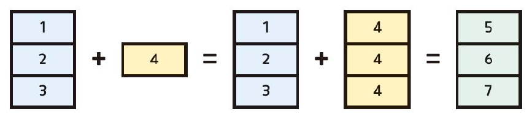

# NumPy 라이브러리 설치
#!pip install numpy
- NumPy
3.1. 넘파이 배열
- NumPy 라이브러리
- Numerical Python의 약자로, 과학적 연산과 수치 계산을 위한 Python 라이브러리
- 대규모 다차원 배열 및 행렬 연산에 최적화되어 있으며, 빠르고 효율적인 데이터 처리를 지원함
- 넘파이 배열(ndarray)
- 동일한 자료형의 요소들로 구성된 다차원 배열
- 일반적인 리스트보다 메모리 효율이 뛰어나고, 연산 속도도 훨씬 빠름
- 순서가 있는(ordered) 구조로, 인덱싱과 슬라이싱을 통해 요소 접근 및 수정이 가능함
# NumPy 라이브러리 불러오기
import numpy as np# 넘파이 배열 생성1 : 리스트 사용
arr = np.array([1, 2, 3, 4])
print(arr)[1 2 3 4]# 넘파이 배열 생성2
# 하나의 배열에는 동일한 자료형만 저장할 수 있음
# 만약 숫자와 문자를 동시에 배열에 넣으면 모두 문자열로 취급됨
arr = np.array([1, 2, "A"])
print(arr)['1' '2' 'A']# 넘파이 배열 생성3 : 2차원 배열
# 리스트를 중첩해서 인수로 넘겨 2차원 배열을 만듬
arr = np.array([[1, 2, 3, 4, 5],
[6, 7, 8, 9, 10]])
print(arr)[[ 1 2 3 4 5]
[ 6 7 8 9 10]]# 넘파이 배열 속성1 : 배열의 차원
arr.ndim2# 넘파이 배열 속성2 : 배열 요소의 자료형
arr.dtypedtype('int32')# 넘파이 배열 속성3 : 배열 요소의 byte 수
arr.itemsize4# 넘파이 배열 속성4 : 배열 요소의 개수
arr.size10# 넘파이 배열 속성5 : 배열 전체의 byte 수
arr.nbytes40# 넘파이 배열 속성6 : 배열의 모양(행, 열)
arr.shape(2, 5)# 넘파이 배열 속성7 : 전치(transpose)
arr.Tarray([[ 1, 6],
[ 2, 7],
[ 3, 8],
[ 4, 9],
[ 5, 10]])- NumPy 라이브러리의
arange()함수를 이용하여 등차수열을 생성할 수 있음- start : 시작 값
- stop : 끝 값 (포함하지 않음)
- step : 차이 값; 간격(stride)
numpy.arange(start, stop, step)
# 등차수열 생성1 : 0부터 n-1까지 정수
arr = np.arange(5)
print(arr)[0 1 2 3 4]# 등차수열 생성2 : 시작 값, 끝 값 지정
arr = np.arange(2, 10)
print(arr) [2 3 4 5 6 7 8 9]# 등차수열 생성3 : 간격 지정
arr = np.arange(1, 10, 2)
print(arr)[1 3 5 7 9]# 등차수열 생성4 : 실수(float) 간격 지정
arr = np.arange(0, 1, 0.2)
print(arr)[0. 0.2 0.4 0.6 0.8]3.2. 넘파이 배열 인덱싱
- 넘파이 배열은 정수, 배열, 논리값(boolean) 등으로 인덱싱할 수 있음
- 리스트 인덱싱과 마찬가지로
[]를 사용하며, 인덱스는 0부터 시작 - 마스킹(masking), 논리값 인덱싱(boolean indexing)
- 특정 조건에 맞는 데이터를 추출하는 것
- 일반적으로 비교 연산자를 사용한 조건식을 사용함
- 특히 데이터가 많을 때 반복문 없이 조건 검사가 가능하여 효율적임
# 정수 인덱싱
arr = np.array([10, 20, 30, 40, 50])
print(arr[1])
print(arr[-2])20
40# 배열 인덱싱
idx = np.array([0, 2])
print(arr[idx])[10 30]# 논리값(boolean) 인덱싱 : 조건을 만족하는 값 추출
mask = np.array([True, False, True, True, False])
print(arr[mask])
print(arr[arr > 25])[10 30 40]
[30 40 50]3.3. 넘파이 배열 슬라이싱
- 넘파이 배열에서 연속된 일부 요소를 잘라 추출하는 것
[start:stop:step]를 사용하여 범위를 지정함- start : 시작 인덱스
- stop : 끝 인덱스 (포함하지 않음)
- step : 증감 폭
# 배열 슬라이싱1 : 1번 인덱스부터 4번 인덱스 전까지
arr = np.array([11, 12, 13, 14, 15])
print(arr[1:4])[12 13 14]# 배열 슬라이싱2 : 처음부터 3번 인덱스 전까지
print(arr[:3])[11 12 13]# 배열 슬라이싱3 : 2번 인덱스부터 끝까지
print(arr[2:]) # [30 40 50] ()[13 14 15]# 배열 슬라이싱4 : 요소를 2개씩 건너뛰기
print(arr[::2])[11 13 15]# 배열 슬라이싱5 : 역순 정렬
print(arr[::-1])[15 14 13 12 11]3.4. 브로드캐스팅
- 브로드캐스팅(broadcasting)
- 서로 다른 형태의 배열 간 연산을 할 때 발생함
- 작은 차원의 배열을 큰 차원의 배열에 맞게 자동으로 변환한 후, 요소별로 연산을 수행함

# 넘파이 배열 연산 : 동일한 위치의 요소 간 연산 숭행
arr1 = np.array([1, 2, 3])
arr2 = np.array([10, 20, 30])
arr1 + arr2array([11, 22, 33])# 넘파이 배열 연산 : 브로드캐스팅
arr = np.array([1, 2, 3, 4])
print(arr + 2)
print(arr * 2)[3 4 5 6]
[2 4 6 8]3.5. 넘파이 배열 복사
- 얕은 복사
=연산자 또는view()메소드를 사용한 복사- 데이터의 메모리 주소만 복사하여, 원본과 데이터를 공유함
- 원본이나 복사본 중 하나를 수정하면 서로 영향을 미침
- 깊은 복사
copy()메소드를 사용한 복사- 완전히 새로운 메모리 공간에 데이터 전체를 복사함
- 원본과 복사본이 독립적이며, 어느 쪽을 수정해도 서로 영향을 주지 않음
# 얕은 복사
arr1 = np.arange(6)
copy1 = arr1
print(arr1)
print(copy1)[0 1 2 3 4 5]
[0 1 2 3 4 5]# 복사본을 수정하면 원본도 변함
copy1[0] = 10
print(arr1)
print(copy1)[10 1 2 3 4 5]
[10 1 2 3 4 5]# 깊은 복사
arr2 = np.arange(6)
copy2 = arr2.copy()
print(arr2)
print(copy2)[0 1 2 3 4 5]
[0 1 2 3 4 5]# 복사본을 수정해도 원본이 변하지 않음
copy2[0] = 20
print(arr2)
print(copy2)[0 1 2 3 4 5]
[20 1 2 3 4 5]3.6. 배열 정렬
np.sort(배열): 배열을 오름차순 정렬한 새로운 배열을 반환, 원본은 변하지 않음배열.sort(): 배열을 오름차순 정렬하고, 원본 자체를 변경함np.argsort(배열): 정렬 시 각 요소가 위치하게 될 인덱스의 배열을 반환
# 배열 정렬1
arr = np.array([3, 2, 5, 1, 4])
print(np.sort(arr))
print(arr)[1 2 3 4 5]
[3 2 5 1 4]# 배열 정렬2
arr.sort()
print(arr)[1 2 3 4 5]# 배열 정렬3
arr = np.array([3, 2, 5, 1, 4])
print(np.argsort(arr))[3 1 0 4 2]